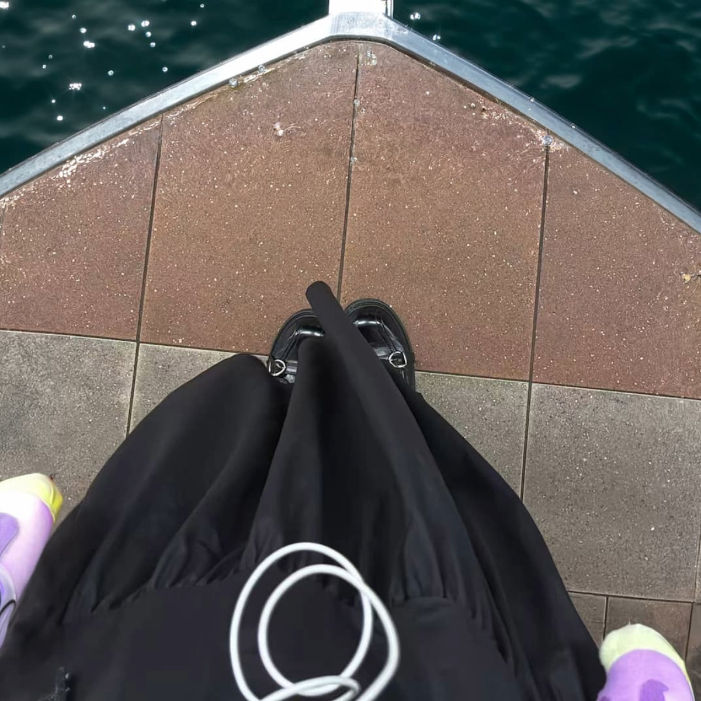
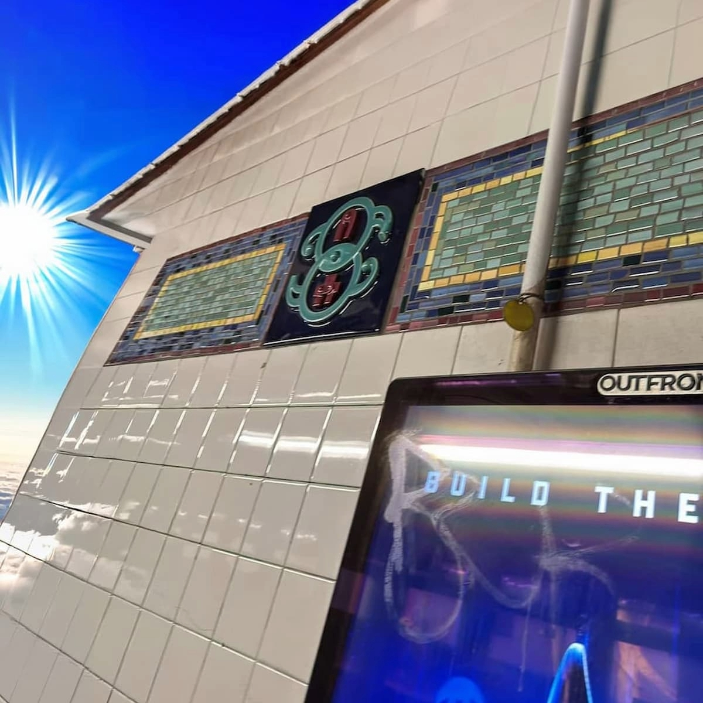
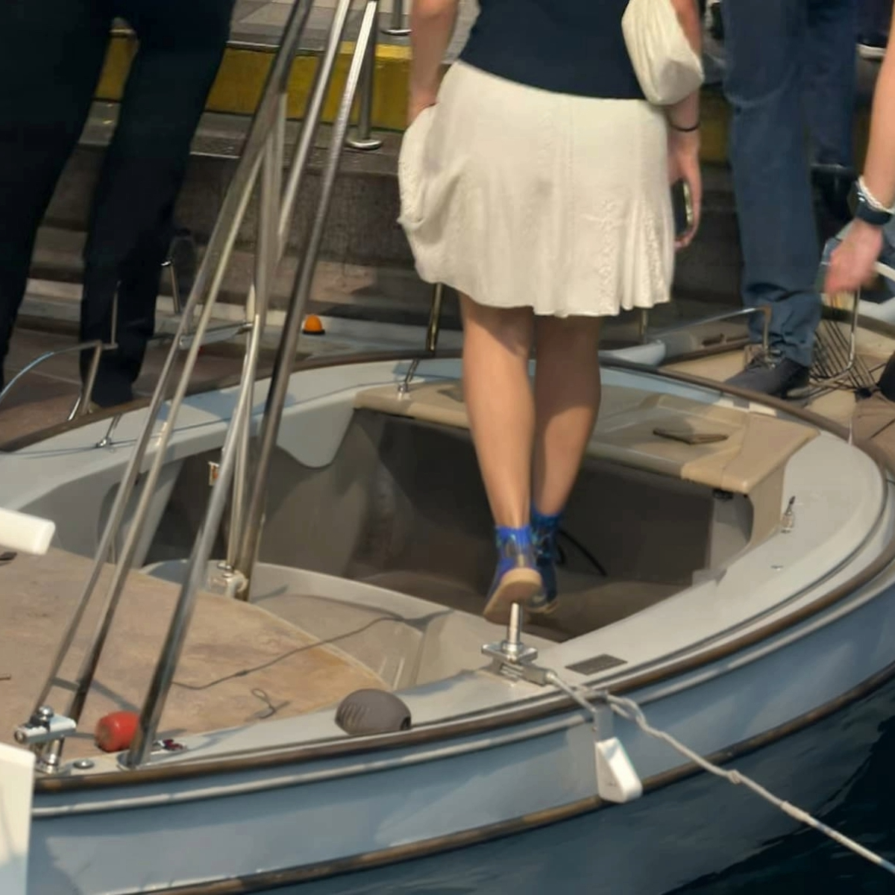

A.I. for Designers
Commute Story
I utilized Photoshop generative fill to show my commute story to campus.
The Sequence



♦
I utilized Photoshop generative fill to show my commute story to campus.
The Sequence



♦